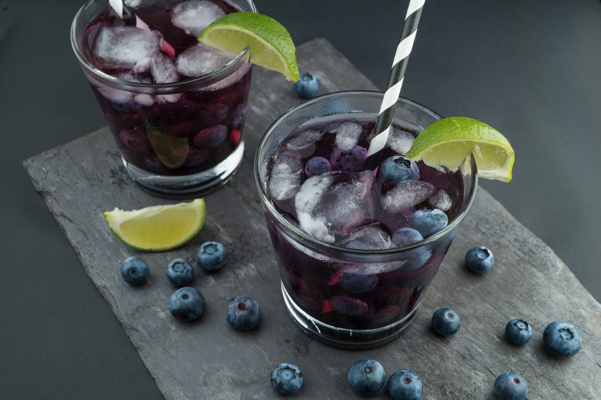

- Panes
- Pasteleria
- Bebidas
- Contacto
- Conoce mas
- Tabla de precios
Tanto para tomar un café, sorbetes, batidos de todo tipo de frutas, como acompañamiento para degustar nuestros exquisitos pasteles o simplemente para comprar tu pan de cada día, tienes a tu disposición nuestra panaderia. En ella vas a encontrar un gran servicio y calidad en nuestros productos pero, sobre todo, vas a sentirte bien en un ambiente cálido y acogedor.

Te ofrecemos jugos naturales de la fruta que mas te guste, batidos de ruta con pura leche que te van a encantar, y lo mas tradicional de Colombia un buen tinto o un buen cafe con leche.
